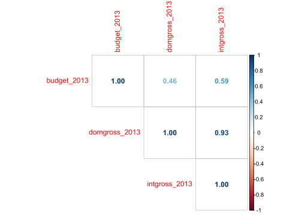
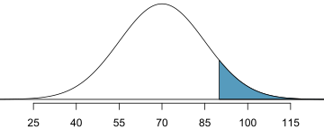
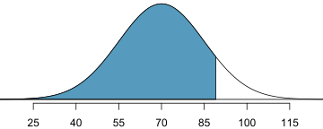

library(tidyverse)bechdel_data <-read.csv("bechdel_data.csv")# Arranging the testbechdel_data <- bechdel_data |>mutate(bechdel_test =fct_relevel(bechdel_test, "fewer than two women", "women don’t talk to each other", "women only talk about men", "dubious", "passes test")) |>arrange(bechdel_test) # Reorders the rows based on the new factor levelsglimpse(bechdel_data)
Rows: 1,794
Columns: 8
$ year <int> 2013, 2013, 2013, 2013, 2013, 2013, 2012, 2012, 2012, 20…
$ decade <chr> "2000-2013", "2000-2013", "2000-2013", "2000-2013", "200…
$ title <chr> "Cloudy with a Chance of Meatballs 2", "Gravity", "Jack …
$ binary <chr> "FAIL", "FAIL", "FAIL", "FAIL", "FAIL", "FAIL", "FAIL", …
$ bechdel_test <fct> fewer than two women, fewer than two women, fewer than t…
$ budget_2013 <dbl> 78.000000, 110.000000, 195.000000, 30.000000, 19.200000,…
$ domgross_2013 <dbl> 119.640264, 271.814796, 65.187603, 19.316646, NA, 2.3225…
$ intgross_2013 <dbl> 271.725448, 708.714796, 197.387603, 62.616646, NA, 22.59…
Basados en el primer gráfico, la mayoría de las películas fueron estrenadas en el período del 2000-2013. Las barras son más altas en esta categoría.
Basados en el primer gráfico, la segunda década con mayor cantidad de observaciones en nuestros datos es el período 1990-2000.
Basados en el segundo gráfico, la proporción de películas que pasa el test de Bechdel ha ido aumentando a través del tiempo.
Basados en el segundo gráfico, la proporción de películas de la categoría “women don´t talk to each other” disminuye a través del tiempo.
Basados en el segundo gráfico, la proporción de películas de las categorías “fewer than two women” y “dubious” no parecen tener un patrón. A veces aumentan, a veces disminuyen.
Ejercicio 2
La única medida de tendencia central que nos proporciona un diagrama de caja es la mediana. La idea era decir cualquiera cosa sobre la mediana. Por ejemplo, las siguientes conclusiones son válidas:
Películas en la categoría “women don´t talk to each other” tienen la mayor mediana
Películas en la categoría “passes test” tienen la menor mediana
La mediana de las películas en la categoría “women don´t talk to each other” es cercana a 50 millones de dólares
La única medida de dispersión que nos proporciona un diagrama de caja es el rango intercuartílico (RIC). En este caso, cualquiera de las categorías entre “dubious”, “women don´t talk to each other” o “fewer than two women” era correcta. Lo importante era argumentar que no debían invertir en esa categoría porque tiene la mayor variabilidad al presentar el mayor rango intercuartílico.
Cualquier conclusión en la misma dirección que las siguientes afirmaciones era válida:
La distribución del presupuesto de películas de la categoría “dubious” presentan la menor cantidad de datos atípicos
La distribución del presupuesto de películas de la categoría “passes test” presentan la mayor cantidad de datos atípicos
La distribución del presupuesto de películas de la categoría “women don´t talk to each other” es la más simétrica porque es aquella caja donde la mediana está más cerca a la mitad de la misma.
Además, las correlaciones entre los recaudos y el presupuesto son:

Sí, la relación observada en los gráficos de dispersión es consistente con los valores de correlación obtenidos. ¿Por qué?
En los gráficos se nota que las películas con mayor presupuesto tienden a generar mayores ingresos, lo que es coherente con las correlaciones positivas obtenidas.
La correlación con la recaudación internacional es más alta (0.59 en comparación 0.46), lo que también se refleja en el gráfico derecho, donde los ingresos internacionales parecen aumentar más rápidamente con el presupuesto en comparación con los ingresos domésticos. Otra manera de describir esto es que la pendiente de la recta era mayor para la recaudación internacional.
Este punto era más para que pensaran sobre el contexto de los datos. No había una única respuesta correcta. Algunos factores que podían explicar la diferencia en la correlación entre el presupuesto y los ingresos domésticos (0.46) vs. los ingresos internacionales (0.59) podrían ser:
Las películas con presupuestos altos suelen estar diseñadas para atraer audiencias globales y pueden beneficiarse de mercados más grandes. En muchos casos, los blockbusters generan más ingresos fuera de EE.UU. que en el mercado doméstico.
Algunas películas pueden no tener el mismo impacto en el mercado local que en mercados extranjeros. Por ejemplo, franquicias de acción y ciencia ficción suelen tener una mayor demanda global.
Las películas con presupuestos más grandes tienen estrategias de marketing global que maximizan su alcance en mercados internacionales, lo que puede hacer que sus ingresos crezcan más allá de lo que se observa en EE.UU.
Los ingresos internacionales pueden estar influenciados por fluctuaciones en tasas de cambio y la creciente importancia de mercados como China e India, donde algunas películas tienen un rendimiento muy alto.
Algunos países tienen cuotas de películas extranjeras o preferencias por ciertas producciones, lo que podría afectar la forma en que el presupuesto impacta los ingresos en diferentes regiones.
Si \(\text{Budget}\sim N(70,15)\), entonces calculamos el área bajo la curva normal usando pnorm() de la siguiente manera:

pnorm(90, mean=70, sd=15, lower.tail =FALSE)
[1] 0.09121122
La otra manera era:
1-pnorm(90, mean=70, sd=15)
[1] 0.09121122
Sin embargo, la pregunta es ¿cuántas películas de nuestra muestra superan los 90 millones? Para esto, multiplicamos ese porcentaje/proporción 0.09 por 1794 películas.
p <-pnorm(90, mean=70, sd=15, lower.tail =FALSE)p*1794
[1] 163.6329
La respuesta es que aproximadamente 163 películas tienen un presupuesto mayor a 90 millones de dólares.
Si \(\text{Budget}\sim N(70,15)\), entonces calculamos el percentil 90 de una curva normal usando qnorm() de la siguiente manera:

qnorm(0.90, mean=70, sd=15)
[1] 89.22327
Es decir, un presupuesto de 89.22 millones de dólares es el percentil 90.
One Sample t-test
data: pass_data$budget_2013
t = 27.002, df = 802, p-value < 2.2e-16
alternative hypothesis: true mean is not equal to 0
95 percent confidence interval:
42.91018 49.63816
sample estimates:
mean of x
46.27417
Las películas que pasan el test de Bechdel tienen un presupuesto entre 42.9 y 49.6 millones de dólares a un nivel de confianza del 95%.
En este caso, la recomendación sería que no inviertan en estas películas ya que el presupuesto es menor a los 50 millones que ellos están buscando.
En este caso, el código sería:
t.test(pass_data$budget_2013, conf.level =0.99)
One Sample t-test
data: pass_data$budget_2013
t = 27.002, df = 802, p-value < 2.2e-16
alternative hypothesis: true mean is not equal to 0
99 percent confidence interval:
41.84928 50.69905
sample estimates:
mean of x
46.27417
La recomendación sería que sí inviertieran puesto que el intervalo de confianza al 99% incluye los 50 millones de presupuesto.
Las implicaciones son:
Al aumentar el nivel de confianza, el intervalo de confianza se hace más grande. Esto significa que la empresa tendrá una estimación menos precisa del presupuesto medio, ya que el rango de valores posibles será mayor.
Sin embargo, es más probable de que el intervalo incluya el presupuesto promedio real. Esto es útil si la empresa quiere minimizar el riesgo de tomar decisiones basadas en una estimación incorrecta del presupuesto.
En conclusión, aumentar el nivel de confianza mejora la seguridad en la estimación, pero a costa de perder precisión, lo que puede afectar la toma de decisiones si el intervalo se vuelve demasiado amplio.
Ejercicio 5
La hipótesis nula (\(H_0\)) en este análisis debería ser que no hay diferencia significativa en el retorno de inversión (ROI) entre las películas que pasan el test de Bechdel y las que no lo pasan. Matemáticamente, esto se puede expresar como:
El error Tipo II ocurre cuando no se rechaza la hipótesis nula (\(H_0\)) cuando en realidad es falsa. En este caso, significaría concluir que no hay diferencia en el retorno de inversión (ROI) entre películas con mayor representación femenina y aquellas que no la tienen, cuando en realidad sí existe una diferencia significativa. Si esto sucede, los productores de cine podrían seguir justificando la falta de inversión en películas con mayor representación femenina, basándose en la creencia errónea de que estas no son rentables.
Sí, la respuesta cambiaría porque el error Tipo I sería más preocupante. El error Tipo I ocurre cuando se concluye erróneamente que hay una diferencia significativa en el retorno de inversión (ROI) entre películas con mayor representación femenina y aquellas que no la tienen, cuando en realidad no existe tal diferencia. Si la empresa toma decisiones de inversión basándose en este resultado erróneo, podría asignar presupuesto a películas con mayor representación femenina esperando un ROI superior, pero sin una base real para justificarlo. Esto podría llevar a inversiones menos rentables, afectando la sostenibilidad financiera del estudio.
El código está evaluando si hay diferencia significativa en el retorno doméstico entre películas que pasan el test de Bechdel y películas que no lo pasan:
Welch Two Sample t-test
data: roi_us by binary
t = 2.2541, df = 1699.6, p-value = 0.02432
alternative hypothesis: true difference in means between group FAIL and group PASS is not equal to 0
99 percent confidence interval:
-1.657665 24.675980
sample estimates:
mean in group FAIL mean in group PASS
44.43038 32.92122
En este caso \(\mu\) es el retorno promedio en el mercado estadounidense (roi_us = domgross_2013 - budget_2013).
La decisión es no rechazar la \(H_0\) porque:
\(p > \alpha\) entonces no se rechaza
test_budget$p.value<0.01
[1] FALSE
El intervalo de confianza [-1.65, 24.67] incluye el 0.
El valor crítico a un \(\alpha=0.01\) es:
qnorm(0.995, mean=0, sd=1)
[1] 2.575829
Entonces \(t = 2.25 < 2.57 = t_{\alpha}\).
Por lo tanto, no hay suficiente evidencia con un nivel de significancia al 1% para afirmar que las películas que pasan el test de Bechdel tienen un ROI significativamente diferente de las que no lo pasan.